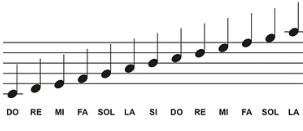
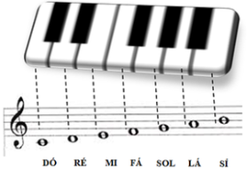

O que é uma partitura?
Antes de entendermos como são feitas as partituras, precisamos buscar o conceito. Sendo assim, podemos definir que a partitura nada mais é do que uma representação escrita de uma determinada música. Assim como qualquer outro sistema de escrita, ela também vem acompanhada de símbolos (notas musicais) que definem cada som da música. Além disso, ela também atua em diferentes estilos e instrumentos musicais, como por exemplo: piano, violão, contrabaixo, violino, guitarra e até mesmo a bateria. É interessante mencionar que uma partitura não só apresenta um sistema de escrita musical para ilustrar as notas e suas durações (parte melódica), mas também garante a representação da parte harmônica.Melhores ofertas em auscultadores.
Sendo assim, podemos definir que esse é o sistema mais completo para representar músicas, além de ser um dos modelos mais antigos.
A estrutura básica de uma partitura é composta por um conjunto de cinco linhas horizontais chamadas de pentagrama. Sobre essas linhas e seus espaços, são colocadas as notas musicais e outros sinais que indicam altura, duração e intensidade dos sons1. A estrutura de uma partitura pode variar de acordo com o estilo musical e a complexidade da obra.
Para que as partituras possam ser criadas, é preciso avaliar algumas questões importantes da música, como harmonia, melodia e ritmo. Após ter total ciência desses três elementos, a partitura já pode começar a ser “desenhada”.Melhores ofertas em auscultadores.
Em geral, elas são compostas por um pentagrama, mais popularmente conhecido como pauta, oferecendo quatro espaços e cinco linhas. Bem no início da partitura, percebemos as claves, que servem unicamente para dar uma “altura” sobre as notas.
Em outras palavras, se temos uma clave num determinado ponto, isso significa que aquela linha será a nota que a clave representa. A partir de então, podemos obter as notas dos outros espaços e linhas.
Em geral, a clave mais utilizada nos dias de hoje é a Clave de Sol, que é escrita na segunda linha e representa a nota de sol. Sendo assim, ela é bastante utilizada para instrumentos como guitarra, violão e, além de tudo, para cada uma das mãos que são utilizadas no piano, por exemplo.
Para outros instrumentos, existe a Clave de Fá, geralmente desenhada na quarta linha e é comumente usada para outros instrumentos interessantes, como é o caso do baixo elétrico.
As notas são escritas nos espaços e linhas da pauta, usando o que geralmente é chamado de figuras de tempo e figuras de pausa.
Como ler uma partitura: Pauta da partitura
Como ler uma partitura: Pauta da partitura é a região onde escrevemos as notas musicais. Essa região é formada por linhas e espaços. Cada linha e cada espaço são usados para representar uma nota musical diferente. Na figura abaixo, você pode ver as linhas, os espaços e as respectivas notas:
Repare como existem 5 linhas na pauta. É possível também criarmos mais linhas para alcançarmos outras oitavas (a primeira nota Dó desse exemplo, bem como a última nota Lá, estão em linhas extras, também chamadas de “suplementares”). Falaremos dessas linhas extras logo em seguida, por enquanto apenas observe que cada linha e espaço são utilizados para representar uma nota diferente em sequência.
Clave de Sol
Os músicos, ao longo da história, escolheram posições diferentes para as notas nas linhas das pautas. E por isso foram inventadas as claves, símbolos que serviriam para sinalizar a nota e a linha de referência que se adotava. A clave mais usada para violão, piano e voz é a clave de Sol.
Ela recebeu esse nome porque informa que a nota que estiver sobre a segunda linha se chamará Sol. Note como o próprio desenho da clave começa na 2º linha (indicação em vermelho na figura abaixo). Muito bem, agora que você já sabe onde está o Sol, poderá registrar todas as outras notas seguindo a mesma lógica que vimos acima:
Obs: Você já deve ter percebido que a primeira coisa que você tem que saber para ler uma partitura é a sequência de notas, de cor e salteado, de trás para frente e de frente para trás!
Agora vamos esclarecer qual é a relação desses pontinhos no papel com o instrumento. Na figura abaixo, estão representadas as oitavas de um piano comum. Perceba como cada Dó tem uma posição diferente na pauta, dependendo da oitava em que se encontra. Utilizaremos um número ao lado da letra C para dizer em qual oitava ele está:
Obs: Esse Dó central (C4) é o Dó que se localiza bem no meio do teclado ou piano. Para você se localizar ainda mais, vamos ampliar a oitava destacada em vermelho (Dó central) e mostrar a correspondência das notas do instrumento com o registro na pauta:
No violão, o Dó central situa-se na terceira casa, quinta corda:
Obs: A partitura para o violão está deslocada de uma oitava em relação ao piano. Na realidade, o Dó central do piano corresponde à altura da nota Dó na segunda corda do violão. Essa definição deslocada foi escolhida para facilitar a escrita, pois se não fosse assim, a escrita no violão precisaria de muitas linhas suplementares para representar os acordes mais simples e comuns.
O correto para representar a partitura no violão é colocar o símbolo “8” na clave de Sol, indicando que a representação está deslocada de um oitava em relação ao dó central do piano:
Mas nem todos os escritores colocam esse símbolo, então fique atento ao instrumento em questão para se localizar corretamente. Continuaremos ensinando como ler partitura no próximo tópico.